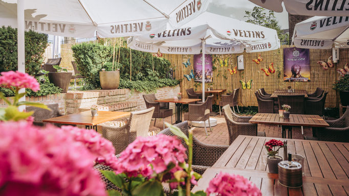
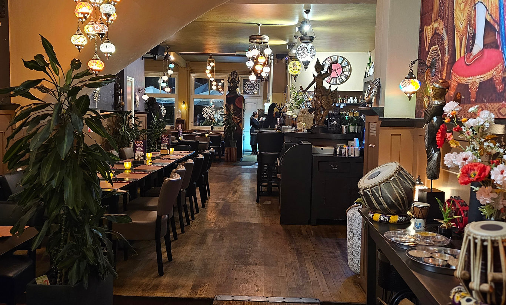
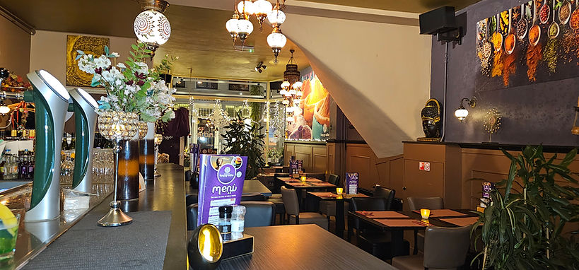
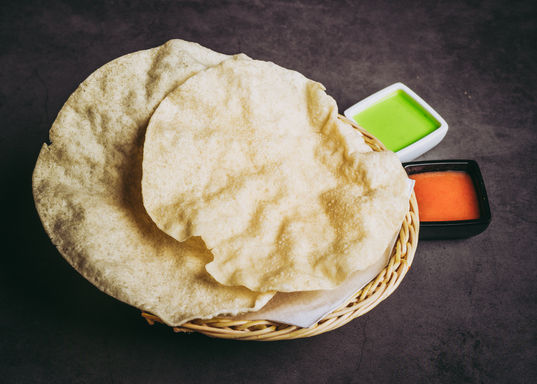

Ons tuinterras
In de zomer kunt u gebruikmaken van ons mooie tuinterras. Buiten eten midden in Arnhem, met de keuken van India op tafel.
Reserveer een tafelIndiaas restaurant in Arnhem centrum
Tandoori uit de kleioven, romige curry's, geurige biryani en thali. Bij ons staan gastvrijheid en lekker eten voorop.

Zomertuinterras achter het restaurant
Waar smaak, traditie en gastvrijheid samenkomen. Wij serveren authentieke gerechten die de rijke en diverse smaken van de Indiase keuken laten zien: smaakvolle tandoori-specialiteiten, rijke en romige curry's, geurige biryani, thali's en verfijnde vegetarische en vegan curry's.
Onze chef-koks werken met verse ingrediënten en een harmonie van kruiden en specerijen. Kom langs en laat u meenemen op een culinaire reis door India. Bij King of India voelt u zich altijd welkom.


Liever thuis eten? Bestel online voor bezorging of haal het zelf op aan de Kortestraat. Onze familiemenu's zijn er voor twee tot acht personen.
Geserveerd met basmati rijst of naanbrood
Deze rijsttafel is een culinaire reis door de Indiase keuken. Laat u verrassen door onze chefkok, u heeft keuze uit: vis, vlees of vegetarisch of royal

In de zomer kunt u gebruikmaken van ons mooie tuinterras. Buiten eten midden in Arnhem, met de keuken van India op tafel.
Reserveer een tafelWij verzorgen ook bruiloften en feesten. Vertel ons wat u van plan bent, dan denken we graag mee.
Zin in Indiaas eten tijdens de feestdagen? U bent bij ons welkom.
Mail onsKortestraat 8
6811 EN Arnhem
Van 17.00 tot 22.00 uur